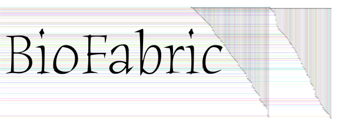

|  |
| Samples from Cytoscape Website | |
|---|---|
| Samples in Cytoscape Download | |
sampleData folder of the Cytoscape download. | |
| Random Networks | |
| 10K node, 60K link Erdos-Renyi Network | er1060.sif |
| 10K node, 10K link Erdos-Renyi Network | er1010.sif |
| Barabasi-Albert Power Law Random Networks | |
| 2K nodes, 11979 links | ba2K.sif |
| Fully Connected Networks | |
| 100 nodes | full100.sif |
| 200 nodes | full200.sif |
| Star Networks | |
| 500 edges, pure star topology | star-500.sif |
| 2K nodes in star topology, with 3993 additional random cross-links | star-2K-4Kx.sif |
Last updated: November 05, 2012
wlongabaugh -at- systemsbiology -dot- org